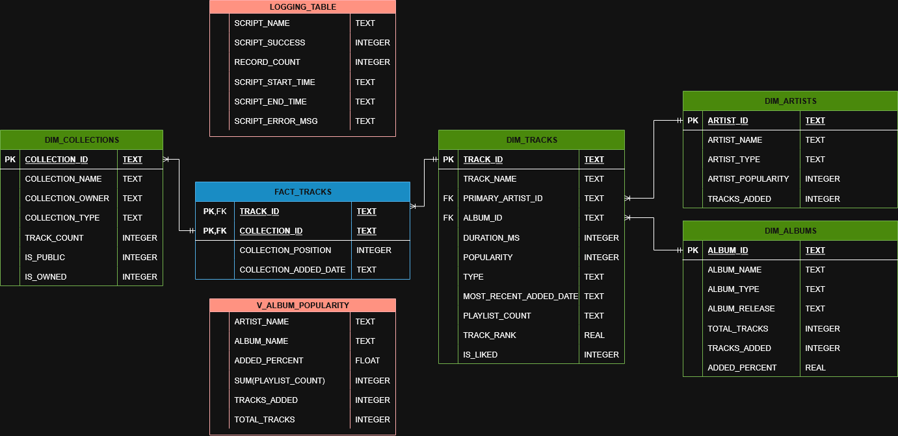

Music ETL / Dashboard


A Python script that connects to my Spotify account using the API and retrieves the playlists I've made, as well as details about the tracks and artists within them. The script then inserts said data into a SQLite database in a star schema.
Originally, this was used to create a view of the albums that I had most commonly added to playlists and figure out which records I should add to my collection but as I expanded the data, I thought I should make a proper display. To do this I created a dashboard in PowerBI. I had extensive experience in Tableau from work, but never used PowerBI before so this was a learning oppurtunity for myself.
Using Python and the library Spotipy, the script returns extracts of my own Spotify library, taking data from it's playlists, artists, albums and songs. The script then transforms the data into a star schema (as shown in the ERD below) with each track acting as a fact record joining between each element. As this project was initially intended to find the albums that I most listened to, I created a view to extract this info with a calculation included to find the percentage of tracks added to playlists vs the total tracks on the albums.

Once this database structure had been made, I created a PowerBI dashboard to display the values from the database in a more readable format. This gave an overview of the Playlists, Artists and Albums.